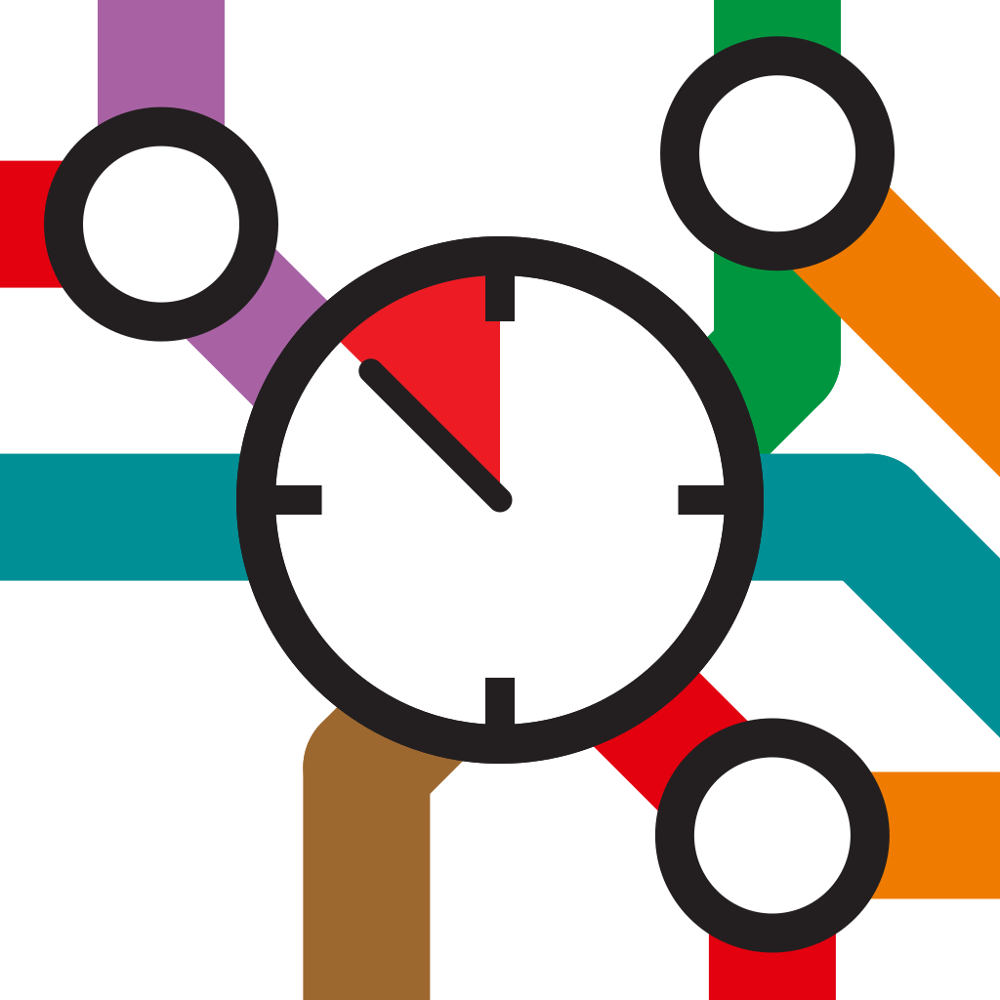

Independent app · not an official Wiener Linien app

Do I have time, or do I have to run?
An iPhone app for Vienna's public transport.
Keine Eile combines the live departures of Wiener Linien with your walk to the stop, and tells you at a glance whether you have time.
U1
LeopoldauPraterstern · 4 min
in 9 minleave in 5 min
5B
Bhf. HeiligenstadtPraterstern · 3 min
in 4 minleave now
O
Bruno-Marek-AlleePraterstern · 5 min
in 3 minEile!
Green: you have time. Orange: start walking. Red: only if you hurry.
Not a Wiener Linien app. Keine Eile is an independent app by Sebastiaan Arnold. Wiener Linien have not made, endorsed or checked it. It uses the public timetable and live data that Wiener Linien publish as open data.
Live departuresStraight from Wiener Linien, with delays and disruptions.
Your walkReal walking times, and it can learn your own pace.
Widgets and SiriOn your home screen, lock screen and Dynamic Island.
PrivateNo account, no tracking. Your data stays on your iPhone.